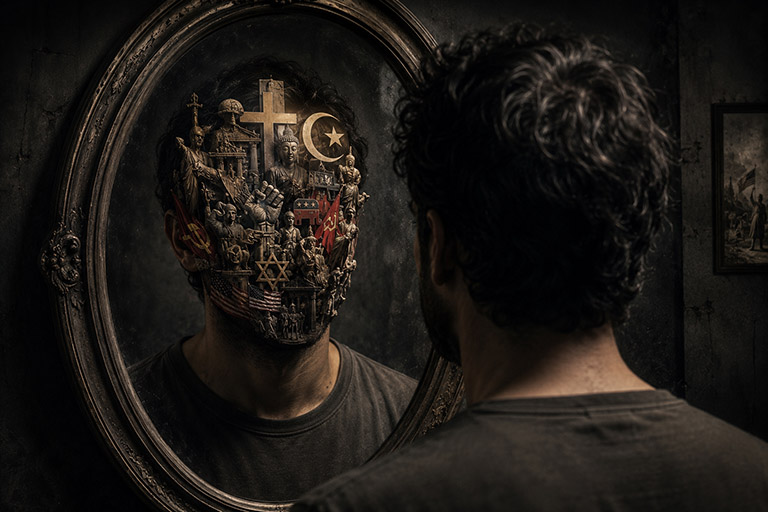

Carl Gustav Jung não observou a mente como uma sala vazia. Para ele, cada pessoa carregava uma paisagem interior habitada por memórias, símbolos, medos e imagens muito mais antigas do que sua própria história.
Este artigo não pretende encerrar Jung em definições. Ele mostra como o Mente Crua organizará uma leitura longa: texto respirando, conexões ao alcance e uma ambientação que serve ao assunto sem disputar atenção com ele.
Até que o inconsciente se torne consciente, ele dirigirá sua vida — e você chamará isso de destino.— Frase atribuída a Carl Gustav Jung

A paisagem que carregamos
A experiência interior não acontece em frases isoladas. Memórias, receios e símbolos formam uma narrativa contínua, e a diagramação acompanha esse movimento ao aproximar texto e imagem no mesmo campo visual.
Em vez de funcionar como uma ilustração decorativa colocada acima do assunto, a imagem ocupa a margem da leitura e conversa diretamente com o bloco que ajuda a desenvolver.

Uma leitura com ritmo de revista
No bloco seguinte, a ordem se inverte. O texto assume o lado esquerdo e conduz o olhar até a imagem à direita. Essa mudança discreta aproveita melhor o espaço e permite que a página respire sem produzir grandes vazios.
O resultado é uma leitura mais longa, fluida e visualmente viva. Cada escolha de composição deve servir ao tema, nunca disputar atenção com ele.
O inconsciente não é um porão
Em vez de tratá-lo apenas como depósito daquilo que reprimimos, Jung percebeu no inconsciente uma força criativa. Sonhos e imagens não seriam ruídos: poderiam ser tentativas da própria psique de restaurar equilíbrio.
Experiências, lembranças, conflitos e conteúdos ligados à história individual.
Padrões simbólicos compartilhados que reaparecem em culturas e épocas distintas.
Arquétipos: formas que atravessam o tempo
Herói, sombra, mãe, velho sábio. Os nomes mudam, mas certas estruturas reaparecem em mitos, religiões, filmes e sonhos. O arquétipo não é um personagem pronto; é uma forma que cada cultura veste com suas próprias imagens.
É aqui que um artigo pode conversar com outras alas da biblioteca sem perder seu eixo. Psicologia encontra mitologia; mitologia encontra arte; arte devolve ao leitor uma pergunta sobre si mesmo.
A sombra e aquilo que negamos
A sombra reúne aspectos que a identidade prefere não reconhecer. Ignorá-la não a destrói. Apenas permite que ela aja sem ser percebida — muitas vezes projetada nas pessoas que julgamos com mais intensidade.